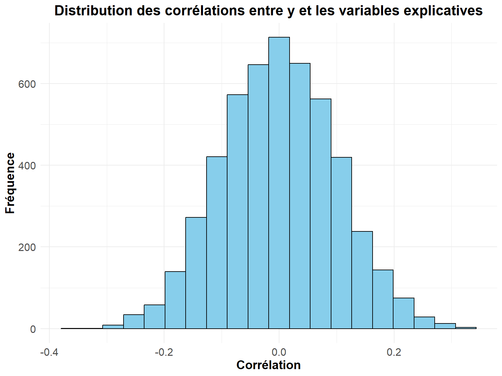
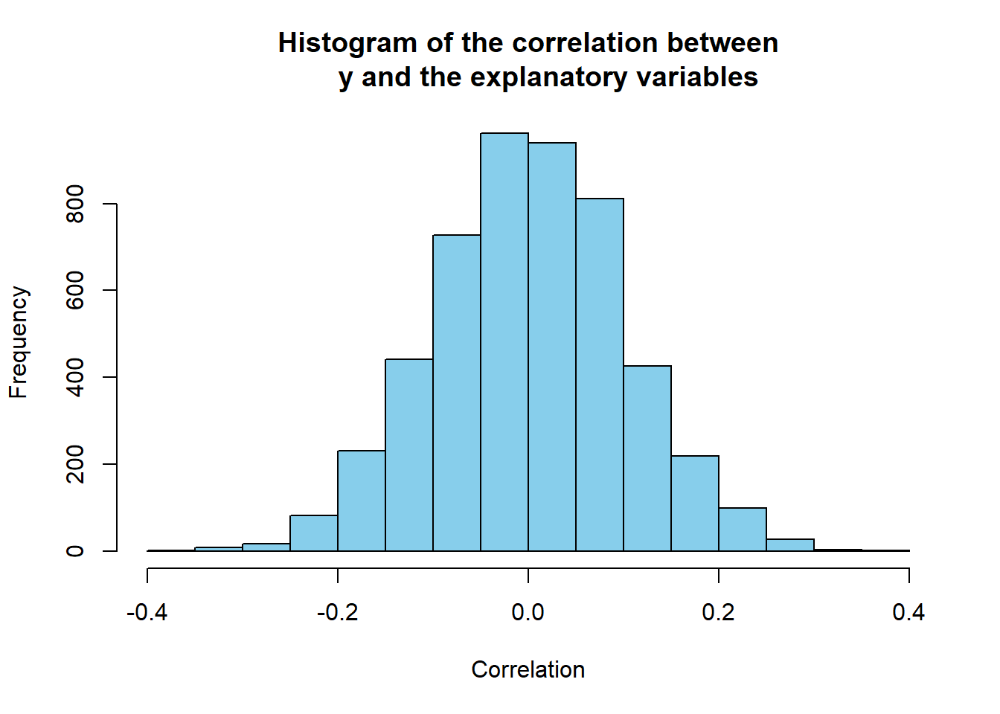

Code
# Données
library(ISLR) # Hitters data
library(dplyr) # manipulation des données
# Inférence
library(leaps) # regsubsets
library(car) # pour VIF
# Plots
## ggplot
library(ggplot2)
library(gridExtra)Clément Poupelin
February 20, 2025
my_boxplot <- function(data) {
# Transformer les données en format long pour ggplot
data_long <- reshape2::melt(data)
ggplot(data_long, aes(x = variable, y = value, fill = variable)) +
geom_boxplot() +
scale_fill_viridis_d() + # Palette de couleurs harmonieuse
labs(title = "Distribution des Variables (Boxplot)", x = "Variables", y = "Valeurs") +
theme_minimal() + # Thème épuré
theme(axis.text.x = element_text(angle = 45, hjust = 1)) # Rotation des étiquettes
}my_barplot <- function(data, variable1, variable2) {
ggplot(data, aes(x = {{ variable1 }}, fill = {{ variable2 }})) +
geom_bar(position = "dodge") +
scale_fill_manual(values = c("#C41E3A", "#0033A0")) +
labs(
title = "Répartition des joueurs par League et Division",
x = deparse(substitute(variable1)),
y = "Nombre de joueurs"
) +
theme_minimal()
}my_League_heatmap <- function(data) {
table_league <- as.data.frame(table(
data$League,
data$NewLeague
))
colnames(table_league) <- c("League", "NewLeague", "Count")
ggplot(table_league, aes(x = League, y = NewLeague, fill = Count)) +
geom_tile(color = "white") +
scale_fill_gradient(low = "deeppink", high = "deeppink4") +
geom_text(aes(label = Count), color = "white", size = 5) +
labs(
title = "Transition des Joueurs entre les Ligues",
x = "League d'origine",
y = "Nouvelle League",
fill = "Nombre de joueurs"
) +
theme_minimal()
}my_pairs.panels <- function(data) {
psych::pairs.panels(
data,
method = "pearson", # Méthode de corrélation
hist.col = RColorBrewer::brewer.pal(9, "Set3"), # Couleurs des histogrammes
density = TRUE, # Ajout des courbes de densité
ellipses = TRUE, # Ajout d'ellipses
smooth = TRUE, # Ajout de régressions lissées
lm = TRUE, # Ajout des droites de régression
col = "#69b3a2",
alpha = 0.5, # Transparence
cex.labels = 3.5, # Taille du texte des variables
font.labels = 2 # Mettre en gras
)
}my_VIFplot <- function(vif) {
vif_df <- data.frame(Variable = names(vif), VIF = vif)
p <- ggplot(vif_df, aes(
x = reorder(Variable, VIF),
y = pmin(VIF, 15),
fill = VIF > 10
)) +
geom_bar(stat = "identity") +
geom_text(aes(label = ifelse(VIF > 10, round(VIF, 1), "")), hjust = -0.2, size = 6) +
coord_flip() +
scale_fill_manual(values = c("FALSE" = "#0072B2", "TRUE" = "#D55E00")) +
labs(title = "Variance Inflation Factor (VIF)", x = "Variables", y = "VIF (limité à 15)") +
theme_minimal() +
theme(
axis.title = element_text(size = 34, face = "bold"),
plot.title = element_text(
size = 54,
face = "bold",
hjust = 0.5
),
axis.text.x = element_text(size = 26),
axis.text.y = element_text(size = 18),
legend.text = element_text(size = 30),
legend.title = element_text(size = 38, face = "bold")
)
return(p)
}On rappel que \(SCR = \sum_i (y_i - f(x_i))^2\) et \(SCT = \sum_i (y_i - \bar{y})^2\).
Ainsi, on peut aretrouver les différents critères :
\[ R^2 = 1 - \frac{SCR}{SCT}\]
\[ R^2_{adjusted} = 1 - \frac{SCR (n-1)}{SCT(n-(p+1))}\]
\[ C_p = \frac{SCR}{\sigma^2} + 2(p+1) - n\]
\[ AIC = n\text{log}\left(\frac{SCR}{n}\right) + 2(p+1)\]
\[ BIC = n\text{log}\left(\frac{SCR}{n}\right) + \text{log}(n)(p+1)\]
Criteria_plot <- function(Criteria, crit_name = "Critère") {
# Création d'un data frame pour ggplot
df_criteria <- data.frame(
nb_var = seq_along(Criteria), # Nombre de variables du modèle
Criteria = Criteria # Critère
)
# Création du plot avec ggplot2
g <- ggplot(df_criteria, aes(x = nb_var, y = Criteria)) +
geom_line(color = "#0072B2", linewidth = 1) +
geom_point(color = "#D55E00", size = 4) +
labs(
title = paste("Évolution de", crit_name, "en fonction du nombre de variables"),
x = "Nombre de variables sélectionnées",
y = crit_name
) +
theme_minimal() +
theme(
plot.title = element_text(hjust = 0.5, face = "bold", size = 26), # Titre centré et agrandi
axis.title.x = element_text(face = "bold", size = 22),
axis.title.y = element_text(face = "bold", size = 22),
axis.text = element_text(size = 20)
)
return(g)
}Best_model <- function(model, criteria_df){
## On a d'abord les critères à maximiser
for(i in 1:2){
criteria_name <- colnames(criteria_df)[i]
criteria <- criteria_df[,i]
best_model_criteria <- which.max(criteria)
selected_vars <- summary(model)$which[best_model_criteria,]
cat("Meilleur modèle selon", criteria_name, " = ", round(max(criteria), 3), " : Modèle avec", best_model_criteria, "variables\n",
rownames(as.data.frame(selected_vars)[as.data.frame(selected_vars)[, 1] == TRUE, , drop = FALSE]), "\n", "\n")
}
## On a ensuite les critères à minimiser
for(i in 3:5){
criteria_name <- colnames(criteria_df)[i]
criteria <- criteria_df[,i]
best_model_criteria <- which.min(criteria)
selected_vars <- summary(model)$which[best_model_criteria,]
cat("Meilleur modèle selon", criteria_name, " = ", round(min(criteria), 3)," : Modèle avec", best_model_criteria, "variables\n",
rownames(as.data.frame(selected_vars)[as.data.frame(selected_vars)[, 1] == TRUE, , drop = FALSE]), "\n", "\n")
}
}Dans ce rapport, nous allons pouvoir illustrer deux grands problèmes qui apparaissent dans le domaine de la statistique en grande dimension :
le biais de sélection
et les corrélations fortuites
Pour faire cela, nous nous baserons sur un jeu de données que l’on créera. On génère alors
\(y\) de taille \(n=100\) avec \(y_i \sim \mathcal{B}(0.5)\)
\(X\) qui contient \(p=5000\) variables explicatives qui seront toutes des réalisations indépendantes de \(n=100\) valeurs issues d’une loi \(\mathcal{N}_{(0,1)}\)
Pour cela, nous pouvons utiliser les fonction de R qui permettent de générer des variables aléatoire.
Pour la variable \(y\), il est possible de la simuler de manière deterministe y <- rep(c(0,1), n/2)
pour des raisons de repouctibilité, une graine ou seed a été défini dans le setup afin que la génération aléatoire reste identique.
Maintenant, nous pouvons déjà souligner que, théoriquement, il ne devrait pas y avoir de lien entre \(y\) et \(X\) puisque les simulations sont faites indépendament.
Pour visualiser cela, il suffit simplement de créer un vecteur qui stockera les différentes valeurs de corrélation entre \(y\) et \(x^i\) pour \(i\) allant de 1 à 5000.
cor_vect <- unlist(lapply(x, function(col) cor(col, y)))
my_hist <- function(data) {
cor_df <- data.frame(Correlation = data)
p <- ggplot(cor_df, aes(x = Correlation)) +
geom_histogram(fill = "skyblue",
color = "black",
bins = 20) +
labs(title = "Distribution des corrélations entre y et les variables explicatives", x = "Corrélation", y = "Fréquence") +
theme_minimal() +
theme(
plot.title = element_text(
size = 16,
face = "bold",
hjust = 0.5
),
axis.title = element_text(size = 14, face = "bold"),
axis.text = element_text(size = 12)
)
return(p)
}
my_hist(cor_vect)
De manière général, il faut savoir qu’une méthode de prévision de \(y\) basée sur les variables explicatives s’exprime nécessairement sous la forme \(\hat{y} = f(x^1, ..., x^{5000})\). La forme de la fonction \(f\) étant généralement obtenue grâce à une estimation sur un échantillon d’apprentissage. Il faut alors découper notre jeu de données en deux échantillons, un pour l’apprentissage et un pour le test.
Dans ces méthodes, nous nous intéressons principalement au taux d’erreur de classification “test”, c’est-à-dire à la probabilité que \(\hat{y}\) soit différent de \(y\), lorsque \(y\) et \(x^1, ..., x^{5000}\) sont dans l’échantillon test et donc indépendants de l’échantillon d’apprentissage.
On peut facilement démontrer que cette probabilité est de 50% quelle que soit la méthode utilisée (cf Preuve).
Pourtant, pour illustrer nos problèmes, supposons que nous avons observé le jeu de données simulé ci-dessus, sans connaître les liens théoriques entre les variables. Nous souhaitons alors ajuster un modèle expliquant au mieux \(y\) en fonction des variables à disposition, et estimer le taux d’erreur des prévisions associées.
Nous remarquons déjà que, \(\hat{y}\) étant une combinaisons de nos variables \(x^1, ..., x^{5000}\) qui sont indépendantes de \(y\), on a \(\hat{y}\) et y sont deux variables indépendantes l’une de l’autre.
Ainsi \[\mathbb{P}(\hat{y} \neq y) = \mathbb{P}(\hat{y}=0, y=1) + \mathbb{P}(\hat{y}=1, y=0)\] \[ \quad \quad \quad \quad \quad \quad \quad \quad = \mathbb{P}(\hat{y}=0)\mathbb{P}(y=1) + \mathbb{P}(\hat{y}=1)\mathbb{P}(y=0) \quad ^{(*)}\] \[ \quad \quad \quad \quad = 0.5\mathbb{P}(\hat{y}=0) + 0.5\mathbb{P}(\hat{y}=1) \quad ^{(**)} \] \[ \quad \quad = 0.5 \left( \mathbb{P}(\hat{y}=0) + \mathbb{P}(\hat{y}=1) \right)\]
Nous reconnaissons ici une somme sur l’univers des possible de la densité discrète de \(\hat{y}\).
Celle ci est donc égale à 1 et on obtient
\[\mathbb{P}(\hat{y} \neq y) = 0.5\]
\(^{(*)} \quad \text{par indépendance de} \quad \hat{y} \quad \text{et} \quad y\)
\(^{(**)} \quad \text{car} \quad y \quad \text{suit une loi de Bernoulli de paramètre} \quad 0.5\)
Étant donné le très grand nombre de variables explicatives, on ne va garder que les 5 variables les plus corrélées avec \(y\) afin d’ajuster un modèle de régression logistique. Pour quantifier la corrélation entre la variable \(y\), qui est binaire, et une variable quantitative, deux possibilités s’offrent :
utiliser la corrélation de Pearson \(\hat{\rho}\) comme si \(y\) était une variable
utiliser le “rapport de corrélation” quantifiant le lien entre une variable qualitative et une variable quantitative : \[\hat{\eta}^2 = \frac{S^2_{inter}}{S^2_{total}}\] où \(S^2_{inter}\) est la somme des carrés “inter-classes” et \(S^2_{total}\) la somme des carrés total.
Par chance, dans notre cas nous avons que \(\hat{\eta}^2 = \hat{\rho}^2\).
Mais rassurez vous, la chance n’ayant pas forcément sa place en mathématiques, la démonstration de cette égalité pourra être trouvé dans la partie Preuve
Ainsi, la corrélation de Pearson pourra suffire pour quantifier le lien entre notre variable binaire et nos variables explicatives. Ce qui tombe bien puisqu’il s’agit de la méthode de corrélation par défaut sous \(\textit{R}\) quand on utilise la fonction \(\textit{cor}\).
Nous allons donc pouvoir garder les 5 variables les plus corrélées en valeur absolue avec \(y\) et ajuster un modèle de régression logistique faisant intervenir ces 5 variables.
Nous voulons ici montrer que dans le cas des donnés que nous simulons, il y a égalité entre les deux coefficients suivants. \[\hat{\rho}^2 = \left(\frac{\sum_{i=1}^n (x_i - \bar{x})(y_i - \bar{y}) }{\sqrt{\sum_{i=1}^n (x_i - \bar{x})^2} \sqrt{\sum_{i=1}^n(y_i -\bar{y})^2}}\right)^2\]
\[\hat{\eta}^2 = \frac{\sum_{k=0}^1 n_k(\bar{x}_k - \bar{x})^2}{\sum_{i=1}^n (x_i - \bar{x})^2}\]
Nous pouvons déjà reconnaitre un terme en commun.
Pour des raisons de simplicité, on notera \(S_x^2 = \sum_{i=1}^n (x_i - \bar{x})^2\)
Nous pouvons alors manipuler un peu les termes de \(\hat{\rho}\)
\(\sum_{i=1}^n (x_i-\bar{x})(y_i - \bar{y})= \sum_{i=1}^n x_iy_i - n\bar{x}\bar{y}\)
et
\(\sum_{i=1}^n(y_i -\bar{y})^2= \sum_{i=1}^n y_i^2 - n\bar{y}^2\)
Maintenant, rappelons que dans notre cas précis, \(\forall i=1, ...,n\) où \(n=100\), \(y_i \sim \mathcal{B}(0.5)\). Nous pouvons donc supposer qu’idéalement on a une parfaite séparation en deux groupes avec autant de 0 que de 1. Et ainsi en déduire les simplifications suivantes :
\(\sum_{i=1}^n y_i^2 = \sum_{i=1}^n y_i\)
\(\bar{y} = \frac{n_1}{n}\)
\(\sum_{i=1}^n x_iy_i = n_1\bar{x}_1 \quad\) puisque l’on multipli par \(0\) les \(x_i\) associés au groupe \(0\)
Dès lors, nous avons \(\hat{\eta}^2 = \frac{n_0(\bar{x}_0 - \bar{x})^2 + n_1(\bar{x}_1 - \bar{x})^2}{S_x^2}\) et
\[\hat{\rho}^2 = \frac{1}{S_x^2} \times \frac{(n_1\bar{x}_1 - n_1\bar{x})^2}{n_1 - \frac{n_1^2}{n}}\] \[\quad = \frac{1}{S_x^2} \times \frac{n_1(\bar{x}_1 - \bar{x})^2}{1 - \frac{n_1}{n}}\] \[\quad = \frac{1}{S_x^2} \times \frac{n_1(\bar{x}_1 - \bar{x})^2}{\frac{n_0}{n}}\] \[\quad \quad = \frac{1}{S_x^2} \times \frac{n n_1(\bar{x}_1 - \bar{x})^2}{n_0}\]
Cela veut donc dire que l’on cherchera à montrer que
\[\frac{n n_1(\bar{x}_1 - \bar{x})^2}{n_0} = n_0(\bar{x}_0 - \bar{x})^2 + n_1(\bar{x}_1 - \bar{x})^2\]
\[\quad \quad \Leftrightarrow 1 = \frac{n_0^2(\bar{x}_0 - \bar{x})^2}{n n_1(\bar{x}_1 - \bar{x})^2} \times \frac{n_0}{n}\]
Mais si on suppose que \(y\) est “parfaitement équilibrée”, c’est à dire qu’il y aurait autant de 0 que de 1, on aura que \(n_0 = n_1 = \frac{n}{2}\) et aussi \[n\bar{x} = n_0\bar{x}_0 + n_1\bar{x}_1 \Leftrightarrow \bar{x} = \frac{1}{2}(\bar{x}_0 + \bar{x}_1) \Leftrightarrow \bar{x}-\bar{x}_0 = \bar{x}_1 - \bar{x}\]
Nous aurons donc que \((\bar{x}_0-\bar{x})^2 = (\bar{x}_1 - \bar{x})^2\)
Finalement, \[\frac{n_0^2(\bar{x}_0 - \bar{x})^2}{n n_1(\bar{x}_1 - \bar{x})^2} \times \frac{n_0}{n} = \frac{(\frac{n}{2})^2}{n (\frac{n}{2})} + \frac{(\frac{n}{2})}{n}\] \[\quad \quad \quad \quad \quad \quad = \frac{(\frac{n}{2})}{n} + \frac{(\frac{n}{2})}{n}\] \[\quad \quad \quad \quad \quad \quad = \frac{1}{2} + \frac{1}{2}\] \[\quad \quad \quad \quad \quad \quad= 1\]
Dans la situation que nous avons ici, nous pouvons donc conclure que \(\hat{\rho}^2 = \hat{\eta}^2\). On peut également supposer que cette égalité reste approximativement vrai dans des cas où “l’équilibre” n’est pas parfait.
Call:
glm(formula = y ~ ., family = "binomial", data = Sub_Simu_data)
Deviance Residuals:
Min 1Q Median 3Q Max
-2.1392 -0.6649 0.2322 0.8332 2.0389
Coefficients:
Estimate Std. Error z value Pr(>|z|)
(Intercept) 0.5826 0.2868 2.031 0.04223 *
V3530 -0.8820 0.2864 -3.079 0.00207 **
V2416 0.5686 0.2744 2.073 0.03821 *
V1512 1.0119 0.3180 3.182 0.00146 **
V1480 -0.4042 0.3044 -1.328 0.18417
V3875 0.9207 0.3254 2.830 0.00466 **
---
Signif. codes: 0 '***' 0.001 '**' 0.01 '*' 0.05 '.' 0.1 ' ' 1
(Dispersion parameter for binomial family taken to be 1)
Null deviance: 137.628 on 99 degrees of freedom
Residual deviance: 90.046 on 94 degrees of freedom
AIC: 102.05
Number of Fisher Scoring iterations: 5En conclusion, avec cette étude nous avons pu illustrer deux grands problèmes que nous pouvons observer dans le cas de la Statistique en grande dimension.
Nous avons le biais de sélection qui arrive lorsque l’on utilise notre échantillon test dans la sélection de variable ou l’ajustement du modèle. Et donc quand on confronte nos prévisions à l’échantillon test, ces dernières seront beaucoup trop optimistes. C’est pour ca que la séparation de notre échantillon doit être faite avant la sélection de nos variables.
Puis, il y a la corrélation fortuite qui est propre à la grande dimension et qui nous montre qu’il faut bien connaître nos données. Lorsque l’on veut construire un modèle, il faut déjà avoir une connaissance sur les variables qui peuvent être liées. Et si on cherche des corrélation sur un jeu de grande dimension, on risque probablement d’en trouver même si théoriquement il n’y en à pas.
Nous voyons donc qu’il faut comprendre les données sur lesquelles nous travaillons et même si les ordinateurs sont des outils performants, il faut que le statisticien garde toujours un regard critique sur les résultats.
─ Session info ───────────────────────────────────────────────────────────────
setting value
version R version 4.2.1 (2022-06-23 ucrt)
os Windows 10 x64 (build 22631)
system x86_64, mingw32
ui RTerm
language (EN)
collate French_France.utf8
ctype French_France.utf8
tz Europe/Paris
date 2025-02-20
pandoc 3.2 @ C:/Program Files/RStudio/resources/app/bin/quarto/bin/tools/ (via rmarkdown)
─ Packages ───────────────────────────────────────────────────────────────────
package * version date (UTC) lib source
car * 3.1-2 2023-03-30 [1] CRAN (R 4.2.3)
carData * 3.0-5 2022-01-06 [1] CRAN (R 4.2.1)
dplyr * 1.1.4 2023-11-17 [1] CRAN (R 4.2.3)
ggplot2 * 3.5.1 2024-04-23 [1] CRAN (R 4.2.3)
gridExtra * 2.3 2017-09-09 [1] CRAN (R 4.2.1)
ISLR * 1.4 2021-09-15 [1] CRAN (R 4.2.3)
leaps * 3.1 2020-01-16 [1] CRAN (R 4.2.1)
[1] C:/Users/cleme/AppData/Local/R/win-library/4.2
[2] C:/Program Files/R/R-4.2.1/library
──────────────────────────────────────────────────────────────────────────────[1] 100 5001Statistique descriptive

Quel est le lien attendu entre y et les variables explicatives ?
On s’attend à ce qu’il n’y ait pas forcément de lien puisqu’on est dans les cas de variables aléatoires créées indépendamment
Une méthode de prévision de y basée sur les variables explicatives \(x^1, ..., x^{5000}\) s’exprime nécessairement sous la forme \(\hat{y} = f(x^1, ..., x^{5000})\). La forme de la fonction \(f\) est généralement obtenue grâce à une estimation sur un échantillon d’apprentissage. On s’intéresse au taux d’erreur de classification “test”, c’est-à-dire à la probabilité que \(\hat{y}\) soit différent de \(y\), lorsque \(y\) et \(x^1, ..., x^{5000}\) sont indépendants de l’échantillon d’apprentissage. Montrer que quelle que soit la méthode utilisée, le taux d’erreur sera de 50%
FAIRE SUR PAPIER
Dans la suite de l’exercice, on suppose qu’on a observé le jeu de données simulé ci-dessus, sans connaître les liens théoriques entre les variables. On souhaite ajuster un modèle expliquant au mieux \(y\) en fonction des variables à disposition, et estimer le taux d’erreur des prévisions associées. Etant donné le très grand nombre de variables explicatives, un statisticien décide de ne garder que les 5 variables les plus corrélées avec \(y\) afin d’ajuster un modèle de régression logistique.
Pour quantifier la corrélation entre la variable y, qui est binaire, et une variable quantitative, deux possibilités s’offrent a priori au statisticien : (i) soit utiliser la corrélation de Pearson \(\hat{\rho}\) (comme si \(y\) était une variable quantitative),
Montrer que dans notre cas : \[ \hat{\eta}^2 = \hat{\rho}^2 \]
Quelles sont les 5 variables les plus corrélées (en valeur absolue) avec \(y\) ?
[1] 0.3852168 0.3707116 0.3702511 0.3513121 0.3474799Ajuster un modèle de régression logistique faisant intervenir ces 5 variables et analyser la qualité du modèle.
Call:
glm(formula = y ~ ., family = "binomial", data = df_cut)
Deviance Residuals:
Min 1Q Median 3Q Max
-2.3156 -0.5999 0.2005 0.6587 2.0247
Coefficients:
Estimate Std. Error z value Pr(>|z|)
(Intercept) 0.1902 0.2698 0.705 0.48097
V2 -0.6138 0.2988 -2.054 0.03993 *
V3 0.6526 0.2889 2.259 0.02390 *
V4 -0.6729 0.3117 -2.159 0.03088 *
V5 0.8727 0.2878 3.033 0.00242 **
V6 0.7080 0.2680 2.641 0.00826 **
---
Signif. codes: 0 '***' 0.001 '**' 0.01 '*' 0.05 '.' 0.1 ' ' 1
(Dispersion parameter for binomial family taken to be 1)
Null deviance: 138.469 on 99 degrees of freedom
Residual deviance: 87.238 on 94 degrees of freedom
AIC: 99.238
Number of Fisher Scoring iterations: 5Afin d’estimer le taux d’erreur de classification associé à ce modèle, le statisticien décide de procéder à une validation croisée K-fold avec K = 10. Estimer de cette manière le taux d’erreur.
Recommencer 10 fois la démarche précédente, c’est à dire les questions 1., 5., 6. et 7, et stocker les 10 taux d’erreurs estimés. Que valent ces estimations. Quelle est leur moyenne ? Ces résultats sont-ils conformes à la valeur théorique attendue ?
K = 10
res = 1:K # Vector to store the raw cross-validation estimate of prediction error
for(i in 1:K){
cat(paste(i, "->")) # counter to see progress
# We recreate our explanatory variables and look at correlations
X = matrix(rnorm(n*5000, 0, 1), ncol = 5000)
cor_vect = 1:dim(X)[2]
for(j in 1:dim(X)[2]){
cor_vect[j] = cor(X[,j], y)
}
# We keep the variables with the higher correlation
index = order(abs(cor_vect), decreasing = T)[1:5]
tab = data.frame(cbind(y, X[, index]))
# We fit our glm
fit = glm(y~., data = tab, family = 'binomial')
res[i] = cv.glm(tab, fit, cost, 10)$delta[1]
}1 ->2 ->3 ->4 ->5 ->6 ->7 ->8 ->9 ->10 -> [1] 0.23 0.18 0.25 0.21 0.19 0.20 0.18 0.25 0.26 0.20[1] 0.215Le problème précédent est appelé biais de sélection. Lorsque l’on effectue la validation croisée, l’échantillon test n’est certes pas utilisé pour l’estimation du modèle, mais il a été utilisé initialement pour sélectionner les variables. Ainsi lorsqu’on confronte les prévisions à l’échantillon test, ces dernières sont trop optimistes car elles ont déjà utilisé l’information contenue dans cet échantillon test. Pour estimer convenablement le taux d’erreur, il faut que l’échantillon test ne soit utilisé à aucun moment dans la procédure de modélisation.
Mettre en oeuvre une validation croisée valide, respectant la règle précédente, pour estimer le taux d’erreur associé à la démarche de modélisation choisie par le statisticien. Recommencer la démarche 10 fois, comme dans la question 7., afin d’obtenir 10 estimation du taux d’erreur. Comparer avec la valeur théorique attendue. On pourra utiliser la fonction cvsegments de la librairie pls pour découper l’échantillon aléatoirement en K parties de taille égale.
Warning: le package 'pls' a été compilé avec la version R 4.2.3
Attachement du package : 'pls'L'objet suivant est masqué depuis 'package:stats':
loadings# To avoid selection bias, we create a list of kf segments in order to separate sample
kf = 10 # number of segments
seg = cvsegments(nrow(X), kf)
tmp = 1:kf
for (i in 1:kf) {
# We define our sample test
sample_test = seg[[i]]
# We build a vector to store the correlation between y and each explanatory variables contain into the segment
cor_vect = 1:5000
for(j in 1:5000){
cor_vect[j] = cor(X[-sample_test, j], y[-sample_test])
}
# We keep the variables with the higher correlation
indexvar = order(abs(cor_vect), decreasing=T)
tab = data.frame(cbind(y, X[, indexvar[1:5]]))
# We fit our glm
fit = glm(y~., data = tab, subset = -sample_test, family = 'binomial')
pred = predict(fit, tab[sample_test,], type = "response")
tmp[i] = cost(y[sample_test], pred)
}
mean(tmp)[1] 0.45# We repeat the process 10 times
res2 = 1:10
for(k in 1:10){
cat(paste(k, "->")) # counter to see progress
# We recreate our explanatory variables
X = matrix(rnorm(n*5000, 0, 1), ncol = 5000)
# We create a list of kf segments in order to separate sample
Kf = 10
seg = cvsegments(nrow(X),Kf)
tmp = 1:Kf
for(i in 1:Kf){
# We define our sample test
test = seg[[i]]
# We build a vector to store the correlation between y and each explanatory variables contain into the segment
cor_vect = 1:5000
for(j in 1:5000){
cor_vect[j] = cor(X[-test,j],y[-test])
}
# We keep the variables with the higher correlation
indexvar = order(abs(cor_vect), decreasing = T)
tab = data.frame(cbind(y, X[, indexvar[1:5]]))
# We fit our glm
fit = glm(y~., data = tab, subset = -test, family = 'binomial')
pred = predict(fit, tab[test,], type = "response")
tmp[i] = cost(y[test], pred)
}
res2[k] = mean(tmp)
}1 ->2 ->3 ->4 ->5 ->6 ->7 ->8 ->9 ->10 -> [1] 0.53 0.70 0.52 0.51 0.69 0.42 0.46 0.51 0.61 0.51[1] 0.546à partir de quelle valeur \(|\hat{\rho}|\) peut-on considérer que deux variables ont une corrélation significativement non-nulle au seuil \(α = 5\%\) ?
Comparer les corrélations des variables dans le modèle précédent avec ce seuil ?
[1] 663 3121 2740 3782 259[1] -0.3548252 -0.3541487 0.3525526 -0.3479385 -0.3453889[1] 5Parmi 5000 variables théoriquement non corrélées avec \(y\), environ combien de variables observées sur \(n = 100\) individus présenteront une corrélation empirique significativement non nulles avec y au seuil \(α = 5\%\) ? Le vérifier sur le jeu de données simulé.
---
title: "Exercice 05"
author: "Clément Poupelin"
date: today
format:
html:
embed-resources: false
toc: true
code-fold: true
code-summary: "Show the code"
code-tools: true
toc-location: right
page-layout: article
code-overflow: wrap
toc: true
number-sections: false
editor: visual
categories: ["regression logistique", "Correlations fortuites", "biais de sélection"]
image: ""
description: "On va illustrer dans ce document les problèmes de biais de séléction et de corrélation fortuite pour des données simulé"
---
# Setup
:::: panel-tabset
## Packages
```{r, setup, warning=FALSE, message=FALSE}
# Données
library(ISLR) # Hitters data
library(dplyr) # manipulation des données
# Inférence
library(leaps) # regsubsets
library(car) # pour VIF
# Plots
## ggplot
library(ggplot2)
library(gridExtra)
```
## Fonctions
::: panel-tabset
### boxplot
```{r}
my_boxplot <- function(data) {
# Transformer les données en format long pour ggplot
data_long <- reshape2::melt(data)
ggplot(data_long, aes(x = variable, y = value, fill = variable)) +
geom_boxplot() +
scale_fill_viridis_d() + # Palette de couleurs harmonieuse
labs(title = "Distribution des Variables (Boxplot)", x = "Variables", y = "Valeurs") +
theme_minimal() + # Thème épuré
theme(axis.text.x = element_text(angle = 45, hjust = 1)) # Rotation des étiquettes
}
```
### barplot
```{r}
my_barplot <- function(data, variable1, variable2) {
ggplot(data, aes(x = {{ variable1 }}, fill = {{ variable2 }})) +
geom_bar(position = "dodge") +
scale_fill_manual(values = c("#C41E3A", "#0033A0")) +
labs(
title = "Répartition des joueurs par League et Division",
x = deparse(substitute(variable1)),
y = "Nombre de joueurs"
) +
theme_minimal()
}
```
### Heatmap
```{r}
my_League_heatmap <- function(data) {
table_league <- as.data.frame(table(
data$League,
data$NewLeague
))
colnames(table_league) <- c("League", "NewLeague", "Count")
ggplot(table_league, aes(x = League, y = NewLeague, fill = Count)) +
geom_tile(color = "white") +
scale_fill_gradient(low = "deeppink", high = "deeppink4") +
geom_text(aes(label = Count), color = "white", size = 5) +
labs(
title = "Transition des Joueurs entre les Ligues",
x = "League d'origine",
y = "Nouvelle League",
fill = "Nombre de joueurs"
) +
theme_minimal()
}
```
### pairs.panels
```{r}
my_pairs.panels <- function(data) {
psych::pairs.panels(
data,
method = "pearson", # Méthode de corrélation
hist.col = RColorBrewer::brewer.pal(9, "Set3"), # Couleurs des histogrammes
density = TRUE, # Ajout des courbes de densité
ellipses = TRUE, # Ajout d'ellipses
smooth = TRUE, # Ajout de régressions lissées
lm = TRUE, # Ajout des droites de régression
col = "#69b3a2",
alpha = 0.5, # Transparence
cex.labels = 3.5, # Taille du texte des variables
font.labels = 2 # Mettre en gras
)
}
```
### VIF plot
```{r}
my_VIFplot <- function(vif) {
vif_df <- data.frame(Variable = names(vif), VIF = vif)
p <- ggplot(vif_df, aes(
x = reorder(Variable, VIF),
y = pmin(VIF, 15),
fill = VIF > 10
)) +
geom_bar(stat = "identity") +
geom_text(aes(label = ifelse(VIF > 10, round(VIF, 1), "")), hjust = -0.2, size = 6) +
coord_flip() +
scale_fill_manual(values = c("FALSE" = "#0072B2", "TRUE" = "#D55E00")) +
labs(title = "Variance Inflation Factor (VIF)", x = "Variables", y = "VIF (limité à 15)") +
theme_minimal() +
theme(
axis.title = element_text(size = 34, face = "bold"),
plot.title = element_text(
size = 54,
face = "bold",
hjust = 0.5
),
axis.text.x = element_text(size = 26),
axis.text.y = element_text(size = 18),
legend.text = element_text(size = 30),
legend.title = element_text(size = 38, face = "bold")
)
return(p)
}
```
### Critères
On rappel que $SCR = \sum_i (y_i - f(x_i))^2$ et $SCT = \sum_i (y_i - \bar{y})^2$.\
Ainsi, on peut aretrouver les différents critères :
$$ R^2 = 1 - \frac{SCR}{SCT}$$
```{r}
r2_fun <- function(y, SCR){
# r2 = SSE/SST = (SST - SSR)/SST = 1 - ssr/sst
SCT <- sum((y - mean(y) )^2)
r2 <- 1 - SCR/SCT
return(r2)
}
```
$$ R^2_{adjusted} = 1 - \frac{SCR (n-1)}{SCT(n-(p+1))}$$
```{r}
r2a_fun <- function(y, SCR){
n <- dim(Hitters_Without_NA)[1]
p <- 1:(dim(Hitters_Without_NA)[2]-1)
SCT <- sum((y - mean(y) )^2)
r2a <- 1 - (SCR/(n-(p+1)))/(SCT/(n-1))
return(r2a)
}
```
$$ C_p = \frac{SCR}{\sigma^2} + 2(p+1) - n$$
```{r}
cp_fun <- function(mod, SCR){
sig <- summary(mod)$sigma
n <- dim(Hitters_Without_NA)[1]
p <- 1:(dim(Hitters_Without_NA)[2]-1)
cp <- SCR/sig^2 + 2*(p+1) - n
return(cp)
}
```
$$ AIC = n\text{log}\left(\frac{SCR}{n}\right) + 2(p+1)$$
```{r}
aic_fun <- function(SCR){
n <- dim(Hitters_Without_NA)[1]
p <- 1:(dim(Hitters_Without_NA)[2]-1)
aic <- n * log(SCR/n) + 2*(p+1)
return(aic)
}
```
$$ BIC = n\text{log}\left(\frac{SCR}{n}\right) + \text{log}(n)(p+1)$$
```{r}
bic_fun <- function(SCR){
n <- dim(Hitters_Without_NA)[1]
p <- 1:(dim(Hitters_Without_NA)[2]-1)
bic <- n * log(SCR/n) + log(n)*(p+1)
return(bic)
}
```
### plot pour nos critères
```{r}
Criteria_plot <- function(Criteria, crit_name = "Critère") {
# Création d'un data frame pour ggplot
df_criteria <- data.frame(
nb_var = seq_along(Criteria), # Nombre de variables du modèle
Criteria = Criteria # Critère
)
# Création du plot avec ggplot2
g <- ggplot(df_criteria, aes(x = nb_var, y = Criteria)) +
geom_line(color = "#0072B2", linewidth = 1) +
geom_point(color = "#D55E00", size = 4) +
labs(
title = paste("Évolution de", crit_name, "en fonction du nombre de variables"),
x = "Nombre de variables sélectionnées",
y = crit_name
) +
theme_minimal() +
theme(
plot.title = element_text(hjust = 0.5, face = "bold", size = 26), # Titre centré et agrandi
axis.title.x = element_text(face = "bold", size = 22),
axis.title.y = element_text(face = "bold", size = 22),
axis.text = element_text(size = 20)
)
return(g)
}
```
### Meilleur modèle après regsubset
```{r}
Best_model <- function(model, criteria_df){
## On a d'abord les critères à maximiser
for(i in 1:2){
criteria_name <- colnames(criteria_df)[i]
criteria <- criteria_df[,i]
best_model_criteria <- which.max(criteria)
selected_vars <- summary(model)$which[best_model_criteria,]
cat("Meilleur modèle selon", criteria_name, " = ", round(max(criteria), 3), " : Modèle avec", best_model_criteria, "variables\n",
rownames(as.data.frame(selected_vars)[as.data.frame(selected_vars)[, 1] == TRUE, , drop = FALSE]), "\n", "\n")
}
## On a ensuite les critères à minimiser
for(i in 3:5){
criteria_name <- colnames(criteria_df)[i]
criteria <- criteria_df[,i]
best_model_criteria <- which.min(criteria)
selected_vars <- summary(model)$which[best_model_criteria,]
cat("Meilleur modèle selon", criteria_name, " = ", round(min(criteria), 3)," : Modèle avec", best_model_criteria, "variables\n",
rownames(as.data.frame(selected_vars)[as.data.frame(selected_vars)[, 1] == TRUE, , drop = FALSE]), "\n", "\n")
}
}
```
:::
## Seed
```{r}
set.seed(140400)
```
::::
# Données
Dans ce rapport, nous allons pouvoir illustrer deux grands problèmes qui apparaissent dans le domaine de la statistique en grande dimension :
- le biais de sélection
- et les corrélations fortuites
Pour faire cela, nous nous baserons sur un jeu de données que l'on créera. On génère alors
- $y$ de taille $n=100$ avec $y_i \sim \mathcal{B}(0.5)$
- $X$ qui contient $p=5000$ variables explicatives qui seront toutes des réalisations indépendantes de $n=100$ valeurs issues d'une loi $\mathcal{N}_{(0,1)}$
Pour cela, nous pouvons utiliser les fonction de *`R`* qui permettent de générer des variables aléatoire.
```{r}
n <- 100
p <- 5000
y <- rbinom(n = 100, size = 1, prob = 0.5)
x <- matrix(rnorm(n*p, 0, 1), ncol = p) %>% as.data.frame()
Simu_data <- cbind(y, x) %>% as.data.frame()
```
::: callout-note
Pour la variable $y$, il est possible de la simuler de manière deterministe `y <- rep(c(0,1), n/2)`
:::
::: callout-note
pour des raisons de repouctibilité, une graine ou seed a été défini dans le setup afin que la génération aléatoire reste identique.
:::
# Analyse descriptive
## Corrélation
Maintenant, nous pouvons déjà souligner que, théoriquement, il ne devrait pas y avoir de lien entre $y$ et $X$ puisque les simulations sont faites indépendament. \
Pour visualiser cela, il suffit simplement de créer un vecteur qui stockera les différentes valeurs de corrélation entre $y$ et $x^i$ pour $i$ allant de 1 à 5000.
```{r, fig.height=6, fig.width=8}
cor_vect <- unlist(lapply(x, function(col) cor(col, y)))
my_hist <- function(data) {
cor_df <- data.frame(Correlation = data)
p <- ggplot(cor_df, aes(x = Correlation)) +
geom_histogram(fill = "skyblue",
color = "black",
bins = 20) +
labs(title = "Distribution des corrélations entre y et les variables explicatives", x = "Corrélation", y = "Fréquence") +
theme_minimal() +
theme(
plot.title = element_text(
size = 16,
face = "bold",
hjust = 0.5
),
axis.title = element_text(size = 14, face = "bold"),
axis.text = element_text(size = 12)
)
return(p)
}
my_hist(cor_vect)
```
::: panel-tabset
## Texte
De manière général, il faut savoir qu'une méthode de prévision de $y$ basée sur les variables explicatives s’exprime nécessairement sous la forme $\hat{y} = f(x^1, ..., x^{5000})$. La forme de la fonction $f$ étant généralement obtenue grâce à une estimation sur un échantillon d’apprentissage. Il faut alors découper notre jeu de données en deux échantillons, un pour l'apprentissage et un pour le test.\
Dans ces méthodes, nous nous intéressons principalement au taux d’erreur de classification "test", c’est-à-dire à la probabilité que $\hat{y}$ soit différent de $y$, lorsque $y$ et $x^1, ..., x^{5000}$ sont dans l'échantillon test et donc indépendants de l’échantillon d’apprentissage.\
On peut facilement démontrer que cette probabilité est de 50% quelle que soit la méthode utilisée (cf **Preuve**).
Pourtant, pour illustrer nos problèmes, supposons que nous avons observé le jeu de données simulé ci-dessus, sans connaître les liens théoriques entre les variables. Nous souhaitons alors ajuster un modèle expliquant au mieux $y$ en fonction des variables à disposition, et estimer le taux d’erreur des prévisions associées.
## Preuve
Nous remarquons déjà que, $\hat{y}$ étant une combinaisons de nos variables $x^1, ..., x^{5000}$ qui sont indépendantes de $y$, on a $\hat{y}$ et y sont deux variables indépendantes l'une de l'autre.\
Ainsi
$$\mathbb{P}(\hat{y} \neq y) = \mathbb{P}(\hat{y}=0, y=1) + \mathbb{P}(\hat{y}=1, y=0)$$
$$ \quad \quad \quad \quad \quad \quad \quad \quad = \mathbb{P}(\hat{y}=0)\mathbb{P}(y=1) + \mathbb{P}(\hat{y}=1)\mathbb{P}(y=0) \quad ^{(*)}$$
$$ \quad \quad \quad \quad = 0.5\mathbb{P}(\hat{y}=0) + 0.5\mathbb{P}(\hat{y}=1) \quad ^{(**)} $$
$$ \quad \quad = 0.5 \left( \mathbb{P}(\hat{y}=0) + \mathbb{P}(\hat{y}=1) \right)$$
Nous reconnaissons ici une somme sur l'univers des possible de la densité discrète de $\hat{y}$.\
Celle ci est donc égale à 1 et on obtient
$$\mathbb{P}(\hat{y} \neq y) = 0.5$$
- $^{(*)} \quad \text{par indépendance de} \quad \hat{y} \quad \text{et} \quad y$
- $^{(**)} \quad \text{car} \quad y \quad \text{suit une loi de Bernoulli de paramètre} \quad 0.5$
:::
# Biais de sélection
::: panel-tabset
## Texte
Étant donné le très grand nombre de variables explicatives, on ne va garder que les 5 variables les plus corrélées avec $y$ afin d’ajuster un modèle
de régression logistique. Pour quantifier la corrélation entre la variable $y$, qui est binaire, et une variable quantitative, deux possibilités s’offrent :
- utiliser la corrélation de Pearson $\hat{\rho}$ comme si $y$ était une variable
- utiliser le "rapport de corrélation" quantifiant le lien entre une variable qualitative et une variable quantitative :
$$\hat{\eta}^2 = \frac{S^2_{inter}}{S^2_{total}}$$
où $S^2_{inter}$ est la somme des carrés "inter-classes" et $S^2_{total}$ la somme des carrés
total.
Par chance, dans notre cas nous avons que $\hat{\eta}^2 = \hat{\rho}^2$.\
Mais rassurez vous, la chance n'ayant pas forcément sa place en mathématiques, la démonstration de cette égalité pourra être trouvé dans la partie **Preuve**\
Ainsi, la corrélation de Pearson pourra suffire pour quantifier le lien entre notre variable binaire et nos variables explicatives. Ce qui tombe bien puisqu'il s'agit de la méthode de corrélation par défaut sous $\textit{R}$ quand on utilise la fonction $\textit{cor}$.\
Nous allons donc pouvoir garder les 5 variables les plus corrélées en valeur absolue avec $y$ et ajuster un modèle de régression logistique faisant intervenir ces 5 variables.
## Preuve
Nous voulons ici montrer que dans le cas des donnés que nous simulons, il y a égalité entre les deux coefficients suivants.
$$\hat{\rho}^2 = \left(\frac{\sum_{i=1}^n (x_i - \bar{x})(y_i - \bar{y}) }{\sqrt{\sum_{i=1}^n (x_i - \bar{x})^2} \sqrt{\sum_{i=1}^n(y_i -\bar{y})^2}}\right)^2$$
$$\hat{\eta}^2 = \frac{\sum_{k=0}^1 n_k(\bar{x}_k - \bar{x})^2}{\sum_{i=1}^n (x_i - \bar{x})^2}$$
Nous pouvons déjà reconnaitre un terme en commun.\
Pour des raisons de simplicité, on notera $S_x^2 = \sum_{i=1}^n (x_i - \bar{x})^2$\
Nous pouvons alors manipuler un peu les termes de $\hat{\rho}$\
$\sum_{i=1}^n (x_i-\bar{x})(y_i - \bar{y})= \sum_{i=1}^n x_iy_i - n\bar{x}\bar{y}$\
et\
$\sum_{i=1}^n(y_i -\bar{y})^2= \sum_{i=1}^n y_i^2 - n\bar{y}^2$\
Maintenant, rappelons que dans notre cas précis, $\forall i=1, ...,n$ où $n=100$, $y_i \sim \mathcal{B}(0.5)$. Nous pouvons donc supposer qu'idéalement on a une parfaite séparation en deux groupes avec autant de 0 que de 1. Et ainsi en déduire les simplifications suivantes :
- $\sum_{i=1}^n y_i^2 = \sum_{i=1}^n y_i$
- $\bar{y} = \frac{n_1}{n}$
- $\sum_{i=1}^n x_iy_i = n_1\bar{x}_1 \quad$ puisque l'on multipli par $0$ les $x_i$ associés au groupe $0$
Dès lors, nous avons $\hat{\eta}^2 = \frac{n_0(\bar{x}_0 - \bar{x})^2 + n_1(\bar{x}_1 - \bar{x})^2}{S_x^2}$ et
$$\hat{\rho}^2 = \frac{1}{S_x^2} \times \frac{(n_1\bar{x}_1 - n_1\bar{x})^2}{n_1 - \frac{n_1^2}{n}}$$
$$\quad = \frac{1}{S_x^2} \times \frac{n_1(\bar{x}_1 - \bar{x})^2}{1 - \frac{n_1}{n}}$$
$$\quad = \frac{1}{S_x^2} \times \frac{n_1(\bar{x}_1 - \bar{x})^2}{\frac{n_0}{n}}$$
$$\quad \quad = \frac{1}{S_x^2} \times \frac{n n_1(\bar{x}_1 - \bar{x})^2}{n_0}$$
Cela veut donc dire que l'on cherchera à montrer que
$$\frac{n n_1(\bar{x}_1 - \bar{x})^2}{n_0} = n_0(\bar{x}_0 - \bar{x})^2 + n_1(\bar{x}_1 - \bar{x})^2$$
$$\quad \quad \Leftrightarrow 1 = \frac{n_0^2(\bar{x}_0 - \bar{x})^2}{n n_1(\bar{x}_1 - \bar{x})^2} \times \frac{n_0}{n}$$
Mais si on suppose que $y$ est "parfaitement équilibrée", c'est à dire qu'il y aurait autant de 0 que de 1, on aura que $n_0 = n_1 = \frac{n}{2}$ et aussi
$$n\bar{x} = n_0\bar{x}_0 + n_1\bar{x}_1 \Leftrightarrow \bar{x} = \frac{1}{2}(\bar{x}_0 + \bar{x}_1) \Leftrightarrow \bar{x}-\bar{x}_0 = \bar{x}_1 - \bar{x}$$
\noindent Nous aurons donc que $(\bar{x}_0-\bar{x})^2 = (\bar{x}_1 - \bar{x})^2$
Finalement,
$$\frac{n_0^2(\bar{x}_0 - \bar{x})^2}{n n_1(\bar{x}_1 - \bar{x})^2} \times \frac{n_0}{n} = \frac{(\frac{n}{2})^2}{n (\frac{n}{2})} + \frac{(\frac{n}{2})}{n}$$
$$\quad \quad \quad \quad \quad \quad = \frac{(\frac{n}{2})}{n} + \frac{(\frac{n}{2})}{n}$$
$$\quad \quad \quad \quad \quad \quad = \frac{1}{2} + \frac{1}{2}$$
$$\quad \quad \quad \quad \quad \quad= 1$$
Dans la situation que nous avons ici, nous pouvons donc conclure que $\hat{\rho}^2 = \hat{\eta}^2$. On peut également supposer que cette égalité reste approximativement vrai dans des cas où "l'équilibre" n'est pas parfait.
:::
```{r}
keep_variables <- order(abs(cor_vect), decreasing=TRUE)[1:5]
Sub_Simu_data <- data.frame(cbind(y, x[,keep_variables]))
mod <- glm(y ~ ., data = Sub_Simu_data, family = 'binomial')
mod %>% summary()
```
# Correlations fortuites
# Conclusion
En conclusion, avec cette étude nous avons pu illustrer deux grands problèmes que nous pouvons observer dans le cas de la Statistique en grande dimension. \
Nous avons le **biais de sélection** qui arrive lorsque l'on utilise notre échantillon test dans la sélection de variable ou l'ajustement du modèle. Et donc quand on confronte nos prévisions à l'échantillon test, ces dernières seront beaucoup trop optimistes. C'est pour ca que la séparation de notre échantillon doit être faite avant la sélection de nos variables.\
Puis, il y a la **corrélation fortuite** qui est propre à la grande dimension et qui nous montre qu'il faut bien connaître nos données. Lorsque l'on veut construire un modèle, il faut déjà avoir une connaissance sur les variables qui peuvent être liées. Et si on cherche des corrélation sur un jeu de grande dimension, on risque probablement d'en trouver même si théoriquement il n'y en à pas.\
Nous voyons donc qu'il faut comprendre les données sur lesquelles nous travaillons et même si les ordinateurs sont des outils performants, il faut que le statisticien garde toujours un regard critique sur les résultats.
# Session info
```{r}
sessioninfo::session_info(pkgs = "attached")
```
```{r}
# We simulate our Data Frame
n = 100
y = rbinom(n = 100, size = 1, prob = 0.5)
X = matrix(rnorm(n*5000, 0, 1), ncol = 5000)
df = cbind.data.frame(y, X)
dim(df) # We can verify the dimensions
# Other way to simulate
#y = rep(c(0,1), n/2)
#X = matrix(rnorm(n*5000,0,1), ncol = 5000)
```
Statistique descriptive
```{r}
# We build a vector to store the correlation between y and each explanatory variables
cor_vect = 1:dim(X)[2]
for(i in 1:dim(X)[2]){
cor_vect[i]=cor(X[,i],y)
}
hist(cor_vect,
main ="Histogram of the correlation between
y and the explanatory variables",
xlab = "Correlation",
col = "skyblue")
```
### Question 2
Quel est le lien attendu entre y et les variables explicatives ?
On s'attend à ce qu'il n'y ait pas forcément de lien puisqu'on est dans les cas de variables aléatoires créées indépendamment
### Question 3
Une méthode de prévision de y basée sur les variables explicatives $x^1, ..., x^{5000}$ s’exprime nécessairement sous la forme $\hat{y} = f(x^1, ..., x^{5000})$. La forme de la fonction $f$ est généralement obtenue grâce à une estimation sur un échantillon d’apprentissage. On s’intéresse au taux d’erreur de classification "test", c’est-à-dire à la probabilité que $\hat{y}$ soit différent de $y$, lorsque $y$ et $x^1, ..., x^{5000}$ sont indépendants de l’échantillon d’apprentissage.
Montrer que quelle que soit la méthode utilisée, le taux d’erreur sera de 50%
FAIRE SUR PAPIER
Dans la suite de l’exercice, on suppose qu’on a observé le jeu de données
simulé ci-dessus, sans connaître les liens théoriques entre les variables. On
souhaite ajuster un modèle expliquant au mieux $y$ en fonction des variables à
disposition, et estimer le taux d’erreur des prévisions associées. Etant donné
le très grand nombre de variables explicatives, un statisticien décide de ne
garder que les 5 variables les plus corrélées avec $y$ afin d’ajuster un modèle
de régression logistique.
### Question 4
Pour quantifier la corrélation entre la variable y, qui est binaire, et une
variable quantitative, deux possibilités s’offrent a priori au statisticien :
(i) soit utiliser la corrélation de Pearson $\hat{\rho}$ (comme si $y$ était une variable
quantitative),
```{r}
```
(ii) soit utiliser le "rapport de corrélation" quantifiant le lien entre une variable qualitative et une variable quantitative :
$$\hat{\eta}^2 = \frac{S^2_{inter}}{S^2_{total}}$$
où $S^2_{inter}$ est la somme des carrés "inter-classes" et $S^2_{total}$ la somme des carrés
total.
```{r}
```
Montrer que dans notre cas :
$$ \hat{\eta}^2 = \hat{\rho}^2 $$
### Question 5
Quelles sont les 5 variables les plus corrélées (en valeur absolue) avec $y$ ?
```{r}
# We can isolate the highest correlations (positive or negative)
sort(abs(cor_vect), decreasing=TRUE)[1:5]
# We see that we have no correlation above 40%
```
```{r}
# We isolate the index of the 5 variables with the highest correlation
index = order(abs(cor_vect), decreasing=TRUE)[1:5]
# We create our new Data Frame
df_cut = data.frame(cbind(y, X[,index]))
dim(df_cut)
```
### Question 6
Ajuster un modèle de régression logistique faisant intervenir ces 5 variables et analyser la qualité du modèle.
```{r}
fit = glm(y~., data = df_cut, family = 'binomial')
summary(fit)
```
### Question 7
Afin d’estimer le taux d’erreur de classification associé à ce modèle, le statisticien décide de procéder à une validation croisée K-fold avec K = 10.
Estimer de cette manière le taux d’erreur.
```{r, include=FALSE}
library(boot)
```
```{r}
cost = function(r, pi ){
c = mean(abs(r - pi) > 0.5)
return(c)
}
# Cross validation K-fold
cv.glm(df_cut, fit, cost, 10)$delta[1]
```
### Question 8
Recommencer 10 fois la démarche précédente, c’est à dire les questions 1.,
5., 6. et 7, et stocker les 10 taux d’erreurs estimés. Que valent ces estimations. Quelle est leur moyenne ? Ces résultats sont-ils conformes à la valeur
théorique attendue ?
```{r}
K = 10
res = 1:K # Vector to store the raw cross-validation estimate of prediction error
for(i in 1:K){
cat(paste(i, "->")) # counter to see progress
# We recreate our explanatory variables and look at correlations
X = matrix(rnorm(n*5000, 0, 1), ncol = 5000)
cor_vect = 1:dim(X)[2]
for(j in 1:dim(X)[2]){
cor_vect[j] = cor(X[,j], y)
}
# We keep the variables with the higher correlation
index = order(abs(cor_vect), decreasing = T)[1:5]
tab = data.frame(cbind(y, X[, index]))
# We fit our glm
fit = glm(y~., data = tab, family = 'binomial')
res[i] = cv.glm(tab, fit, cost, 10)$delta[1]
}
```
```{r}
res
mean(res)
# erreur dans notre demarche, pas normal on obtient 0.22 alors que c'est 0.5 qui est attendu
```
Le problème précédent est appelé biais de sélection. Lorsque l’on effectue la
validation croisée, l’échantillon test n’est certes pas utilisé pour l’estimation
du modèle, mais il a été utilisé initialement pour sélectionner les variables.
Ainsi lorsqu’on confronte les prévisions à l’échantillon test, ces dernières
sont trop optimistes car elles ont déjà utilisé l’information contenue dans
cet échantillon test. Pour estimer convenablement le taux d’erreur, il faut
que l’échantillon test ne soit utilisé à aucun moment dans la procédure de
modélisation.
### Question 9
Mettre en oeuvre une validation croisée valide, respectant la règle précédente,
pour estimer le taux d’erreur associé à la démarche de modélisation choisie
par le statisticien. Recommencer la démarche 10 fois, comme dans la question
7., afin d’obtenir 10 estimation du taux d’erreur. Comparer avec la valeur
théorique attendue.
On pourra utiliser la fonction cvsegments de la librairie pls pour découper
l’échantillon aléatoirement en K parties de taille égale.
```{r}
```
```{r}
library(pls)
# To avoid selection bias, we create a list of kf segments in order to separate sample
kf = 10 # number of segments
seg = cvsegments(nrow(X), kf)
tmp = 1:kf
for (i in 1:kf) {
# We define our sample test
sample_test = seg[[i]]
# We build a vector to store the correlation between y and each explanatory variables contain into the segment
cor_vect = 1:5000
for(j in 1:5000){
cor_vect[j] = cor(X[-sample_test, j], y[-sample_test])
}
# We keep the variables with the higher correlation
indexvar = order(abs(cor_vect), decreasing=T)
tab = data.frame(cbind(y, X[, indexvar[1:5]]))
# We fit our glm
fit = glm(y~., data = tab, subset = -sample_test, family = 'binomial')
pred = predict(fit, tab[sample_test,], type = "response")
tmp[i] = cost(y[sample_test], pred)
}
mean(tmp)
```
```{r}
# We repeat the process 10 times
res2 = 1:10
for(k in 1:10){
cat(paste(k, "->")) # counter to see progress
# We recreate our explanatory variables
X = matrix(rnorm(n*5000, 0, 1), ncol = 5000)
# We create a list of kf segments in order to separate sample
Kf = 10
seg = cvsegments(nrow(X),Kf)
tmp = 1:Kf
for(i in 1:Kf){
# We define our sample test
test = seg[[i]]
# We build a vector to store the correlation between y and each explanatory variables contain into the segment
cor_vect = 1:5000
for(j in 1:5000){
cor_vect[j] = cor(X[-test,j],y[-test])
}
# We keep the variables with the higher correlation
indexvar = order(abs(cor_vect), decreasing = T)
tab = data.frame(cbind(y, X[, indexvar[1:5]]))
# We fit our glm
fit = glm(y~., data = tab, subset = -test, family = 'binomial')
pred = predict(fit, tab[test,], type = "response")
tmp[i] = cost(y[test], pred)
}
res2[k] = mean(tmp)
}
res2
mean(res2)
```
### Question 10
à partir de quelle valeur $|\hat{\rho}|$ peut-on considérer que deux variables ont une corrélation significativement non-nulle au seuil $α = 5\%$ ?
```{r}
y = rbinom(n, 1, 0.5)
X = matrix(rnorm(n*5000, 0, 1), ncol = 5000)
# We build a vector to store the correlation between y and each explanatory variables
cor_vect = 1:5000
for(i in 1:5000){
cor_vect[i] = cor(X[,i], y)
}
# We look at the quantile
quant = qnorm(0.975, 0, 1/10)
quant
```
### Question 11
Comparer les corrélations des variables dans le modèle précédent avec ce seuil ?
```{r}
# We keep the variables with the higher correlation
index = order(abs(cor_vect), decreasing = T)
index[1:5]
cor_vect[index[1:5]]
# For our 5 variables with the higher correlation, we look this correlation is more than our quantile
sum((abs(cor_vect[index[1:5]]))>quant)
```
### Question 12
Parmi 5000 variables théoriquement non corrélées avec $y$, environ combien de variables observées sur $n = 100$ individus présenteront une corrélation empirique significativement non nulles avec y au seuil $α = 5\%$ ? Le vérifier sur le jeu de données simulé.
```{r}
# We look at the number of variables in our model where the correlation with y is more than our quantile
sum((abs(cor_vect))>quant)
```